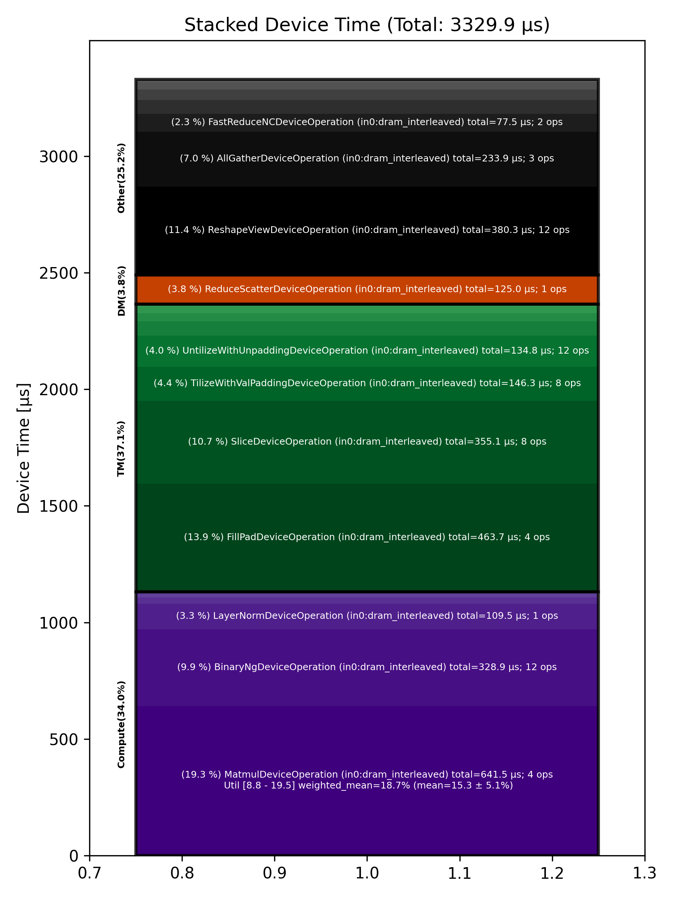

🚀 Performance Report 🚀 ======================== ID Total % Bound OP Code Device Device Time Op-to-Op Gap Cores DRAM DRAM % FLOPs FLOPs % Math Fidelity --------------------------------------------------------------------------------------------------------------------------------------------------------------------------- 10 0.6 % LayerNormDeviceOperation 28 109 μs 16 BF16, BF16 => BF16 39 1.0 % ReshapeViewDeviceOperation 2 29 μs 149 μs 72 BF16 => BF16 85 1.2 % UntilizeWithUnpaddingDeviceOperation 23 9 μs 220 μs 45 BF16 => BF16 121 0.5 % RepeatDeviceOperation 12 9 μs 86 μs 72 BF16 => BF16 138 1.2 % TilizeWithValPaddingDeviceOperation 28 39 μs 177 μs 45 BF16 => BF16 193 4.0 % DRAM MatmulDeviceOperation 32 x 2880 x 5760 11 359 μs 385 μs 60 191 GB/s 66.3 % 11.8 TFLOPs 19.2 % HiFi4 BF16 x BFP8 => BF16 202 0.1 % BinaryNgDeviceOperation 28 22 μs 1 μs 72 BF16, BF16 => BF16 253 0.2 % UntilizeWithUnpaddingDeviceOperation 19 32 μs 1 μs 60 BF16 => BF16 279 2.5 % SliceDeviceOperation 14 155 μs 306 μs 64 BF16 => BF16 317 0.8 % TilizeWithValPaddingDeviceOperation 19 39 μs 102 μs 45 BF16 => BF16 339 0.4 % UnaryDeviceOperation 21 8 μs 64 μs 72 BF16 => BF16 357 1.0 % BinaryNgDeviceOperation 27 15 μs 171 μs 72 BF16, BF16 => BF16 401 1.5 % UntilizeWithUnpaddingDeviceOperation 4 32 μs 242 μs 60 BF16 => BF16 444 2.0 % SliceDeviceOperation 18 155 μs 220 μs 64 BF16 => BF16 477 0.2 % TilizeWithValPaddingDeviceOperation 19 39 μs 1 μs 45 BF16 => BF16 510 0.4 % UnaryDeviceOperation 11 8 μs 58 μs 72 BF16 => BF16 528 0.6 % BinaryNgDeviceOperation 5 16 μs 92 μs 72 BF16, BF16 => BF16 558 0.9 % UnaryDeviceOperation 7 11 μs 154 μs 72 BF16 => BF16 598 0.6 % BinaryNgDeviceOperation 15 12 μs 98 μs 72 BF16, BF16 => BF16 633 0.9 % BinaryNgDeviceOperation 12 12 μs 162 μs 72 BF16, BF16 => BF16 643 3.8 % SLOW MatmulDeviceOperation 32 x 2880 x 2880 9 235 μs 479 μs 45 147 GB/s 51.2 % 9.0 TFLOPs 19.5 % HiFi4 BF16 x BFP8 => BF16 680 0.1 % BinaryNgDeviceOperation 1 11 μs 1 μs 72 BF16, BF16 => BF16 737 1.4 % ReshapeViewDeviceOperation 8 160 μs 109 μs 72 BF16 => BF16 748 0.8 % TypecastDeviceOperation 30 56 μs 98 μs 72 BF16 => FP32 798 0.5 % ReshapeViewDeviceOperation 11 47 μs 47 μs 72 FP32 => FP32 828 2.0 % SLOW MatmulDeviceOperation 32 x 2880 x 32 16 33 μs 336 μs 1 14 GB/s 5.0 % 0.2 TFLOPs 8.8 % HiFi2 FP32 x BFP8 => FP32 863 0.7 % TypecastDeviceOperation 10 2 μs 125 μs 1 FP32 => BF16 875 1.0 % FillPadDeviceOperation 29 3 μs 182 μs 1 BF16 => BF16 902 0.7 % PadDeviceOperation 3 35 μs 91 μs 2 BF16 => BF16 938 0.7 % FillPadDeviceOperation 28 5 μs 123 μs 1 BF16 => BF16 973 0.8 % TopKDeviceOperation 31 44 μs 98 μs 1 BF16 => BF16 1001 0.7 % SliceDeviceOperation 0 1 μs 136 μs 1 BF16 => BF16 1044 0.5 % SliceDeviceOperation 22 1 μs 98 μs 1 UINT16 => UINT16 1072 0.9 % TypecastDeviceOperation 5 2 μs 170 μs 1 UINT16 => INT32 1098 0.5 % ReshapeViewDeviceOperation 28 5 μs 96 μs 16 INT32 => INT32 1125 1.0 % UntilizeWithUnpaddingDeviceOperation 27 3 μs 179 μs 16 INT32 => INT32 1165 1.8 % UntilizeWithUnpaddingDeviceOperation 31 3 μs 337 μs 16 INT32 => INT32 1196 0.5 % PermuteDeviceOperation 30 3 μs 83 μs 16 INT32 => INT32 1229 1.2 % PermuteDeviceOperation 31 3 μs 230 μs 16 INT32 => INT32 1271 0.4 % ConcatDeviceOperation 14 2 μs 82 μs 32 INT32, INT32 => INT32 1295 0.9 % PermuteDeviceOperation 6 3 μs 168 μs 16 INT32 => INT32 1315 0.5 % TilizeWithValPaddingDeviceOperation 25 7 μs 86 μs 16 INT32 => INT32 1371 1.1 % SoftmaxDeviceOperation 17 24 μs 189 μs 72 BF16 => BF16 1393 3.2 % AllGatherDeviceOperation 0 53 μs 535 μs 24 INT32 => INT32 1410 1.4 % AllBroadcastDeviceOperation 8 32 μs 225 μs 4 BF16 => BF16 1443 0.6 % UntilizeWithUnpaddingDeviceOperation 25 7 μs 96 μs 1 BF16 => BF16 1503 0.9 % UntilizeWithUnpaddingDeviceOperation 10 7 μs 163 μs 1 BF16 => BF16 1524 0.4 % UntilizeWithUnpaddingDeviceOperation 22 7 μs 70 μs 1 BF16 => BF16 1550 0.9 % UntilizeWithUnpaddingDeviceOperation 7 7 μs 170 μs 1 BF16 => BF16 1574 0.4 % ConcatDeviceOperation 3 2 μs 80 μs 64 BF16, BF16 => BF16 1610 1.0 % TilizeWithValPaddingDeviceOperation 28 5 μs 183 μs 2 BF16 => BF16 1648 0.7 % ReshapeViewDeviceOperation 5 10 μs 116 μs 8 INT32 => INT32 1693 0.7 % SliceDeviceOperation 19 2 μs 131 μs 8 INT32 => INT32 1728 1.4 % UntilizeWithUnpaddingDeviceOperation 9 14 μs 251 μs 8 INT32 => INT32 1742 0.6 % SliceDeviceOperation 7 4 μs 112 μs 72 INT32 => INT32 1765 0.8 % TilizeWithValPaddingDeviceOperation 27 8 μs 147 μs 8 INT32 => INT32 1805 0.6 % BinaryNgDeviceOperation 31 11 μs 109 μs 72 INT32, INT32 => INT32 1843 0.8 % BinaryNgDeviceOperation 21 3 μs 155 μs 72 INT32, INT32 => INT32 1874 1.4 % ReshapeViewDeviceOperation 20 7 μs 256 μs 8 INT32 => INT32 1903 1.3 % ReshapeViewDeviceOperation 6 3 μs 244 μs 8 BF16 => BF16 1941 0.5 % UntilizeWithUnpaddingDeviceOperation 23 7 μs 94 μs 1 INT32 => INT32 1956 0.9 % UntilizeWithUnpaddingDeviceOperation 26 6 μs 170 μs 1 BF16 => BF16 1996 0.8 % ScatterDeviceOperation 30 60 μs 96 μs 1 BF16, INT32 => BF16 2020 0.7 % TilizeWithValPaddingDeviceOperation 26 5 μs 123 μs 64 BF16 => BF16 2080 1.4 % ReshapeViewDeviceOperation 9 23 μs 243 μs 2 BF16 => BF16 2100 1.8 % UntilizeDeviceOperation 22 4 μs 327 μs 2 BF16 => BF16 2125 3.0 % MeshPartitionDeviceOperation 23 2 μs 559 μs 16 BF16 => BF16 2165 2.5 % MeshPartitionDeviceOperation 29 2 μs 456 μs 16 BF16 => BF16 2209 0.9 % TilizeWithValPaddingDeviceOperation 8 4 μs 159 μs 1 BF16 => BF16 2210 1.0 % TransposeDeviceOperation 24 2 μs 181 μs 72 BF16 => BF16 2270 1.4 % ReshapeViewDeviceOperation 11 8 μs 253 μs 64 BF16 => BF16 2286 2.0 % BinaryNgDeviceOperation 7 124 μs 251 μs 72 BF16, BF16 => BF16 2321 2.3 % FillPadDeviceOperation 4 301 μs 127 μs 64 BF16 => BF16 2354 0.4 % FastReduceNCDeviceOperation 20 68 μs 1 μs 72 BF16 => BF16 2394 0.2 % SliceDeviceOperation 16 34 μs 1 μs 72 BF16 => BF16 2417 3.9 % ReduceScatterDeviceOperation 0 125 μs 609 μs 24 BF16 => BF16 2449 2.1 % AllGatherDeviceOperation 0 108 μs 274 μs 40 BF16 => BF16 2476 0.3 % BinaryNgDeviceOperation 30 48 μs 13 μs 72 BF16, BF16 => BF16 2506 0.9 % ReshapeViewDeviceOperation 28 29 μs 136 μs 72 BF16 => BF16 2533 1.1 % PermuteDeviceOperation 27 22 μs 187 μs 72 BF16 => BF16 2568 0.4 % ReshapeViewDeviceOperation 1 14 μs 69 μs 16 BF16 => BF16 2602 2.2 % SLOW MatmulDeviceOperation 32 x 512 x 2880 13 15 μs 388 μs 45 112 GB/s 39.0 % 6.3 TFLOPs 13.6 % HiFi4 BF16 x BFP8 => BF16 2641 2.4 % AllGatherDeviceOperation 0 73 μs 376 μs 24 BF16 => BF16 2658 0.9 % FillPadDeviceOperation 24 155 μs 19 μs 8 BF16 => BF16 2721 0.3 % FastReduceNCDeviceOperation 8 10 μs 43 μs 72 BF16 => BF16 2749 0.4 % SliceDeviceOperation 19 3 μs 75 μs 72 BF16 => BF16 2769 1.1 % BinaryNgDeviceOperation 4 5 μs 201 μs 72 BF16, BF16 => BF16 2815 1.7 % ReshapeViewDeviceOperation 10 45 μs 267 μs 72 BF16 => BF16 2827 2.0 % BinaryNgDeviceOperation 29 49 μs 322 μs 72 BF16, BF16 => BF16 --------------------------------------------------------------------------------------------------------------------------------------------------------------------------- 100.0 % 89 device ops, 0 host ops, 0 signposts 3,330 μs 15,295 μs 📊 Stacked report 📊 ==================== Total % Op Code Device Time Sum Op Count Op Category Min FLOPs Max FLOPs Mean FLOPs Std FLOPs Weighted Mean FLOPs ------------------------------------------------------------------------------------------------------------------------------------------------------------------------------ 19.27 % MatmulDeviceOperation (in0:dram_interleaved) 641.55 μs 4 Compute 8.80 % 19.53 % 15.27 % 5.11 % 18.66 % 13.93 % FillPadDeviceOperation (in0:dram_interleaved) 463.72 μs 4 TM 11.42 % ReshapeViewDeviceOperation (in0:dram_interleaved) 380.33 μs 12 Other 10.66 % SliceDeviceOperation (in0:dram_interleaved) 355.06 μs 8 TM 9.88 % BinaryNgDeviceOperation (in0:dram_interleaved) 328.86 μs 12 Compute 7.02 % AllGatherDeviceOperation (in0:dram_interleaved) 233.89 μs 3 Other 4.39 % TilizeWithValPaddingDeviceOperation (in0:dram_interleaved) 146.26 μs 8 TM 4.05 % UntilizeWithUnpaddingDeviceOperation (in0:dram_interleaved) 134.78 μs 12 TM 3.76 % ReduceScatterDeviceOperation (in0:dram_interleaved) 125.04 μs 1 DM 3.29 % LayerNormDeviceOperation (in0:dram_interleaved) 109.47 μs 1 Compute 2.33 % FastReduceNCDeviceOperation (in0:dram_interleaved) 77.52 μs 2 Other 1.81 % TypecastDeviceOperation (in0:dram_interleaved) 60.24 μs 3 TM 1.79 % ScatterDeviceOperation (in0:dram_interleaved) 59.58 μs 1 Other 1.32 % TopKDeviceOperation (in0:dram_interleaved) 44.09 μs 1 Other 1.05 % PadDeviceOperation (in0:dram_interleaved) 34.99 μs 1 TM 0.96 % AllBroadcastDeviceOperation (in0:dram_interleaved) 32.10 μs 1 Other 0.90 % PermuteDeviceOperation (in0:dram_interleaved) 30.02 μs 4 TM 0.83 % UnaryDeviceOperation (in0:dram_interleaved) 27.48 μs 3 Compute 0.71 % SoftmaxDeviceOperation (in0:dram_interleaved) 23.68 μs 1 Compute 0.27 % RepeatDeviceOperation (in0:dram_interleaved) 8.87 μs 1 Other 0.12 % UntilizeDeviceOperation (in0:dram_interleaved) 3.88 μs 1 TM 0.11 % MeshPartitionDeviceOperation (in0:dram_interleaved) 3.51 μs 2 Other 0.10 % ConcatDeviceOperation (in0:dram_interleaved) 3.20 μs 2 TM 0.05 % TransposeDeviceOperation (in0:dram_interleaved) 1.81 μs 1 TM ------------------------------------------------------------------------------------------------------------------------------------------------------------------------------
